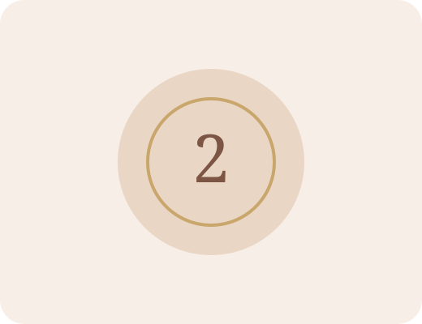

Das Spiel der Leichtigkeit
Eine gemeinsame Reise, bei der bis zu sechs Menschen miteinander spielen – und jede Person ihren eigenen Prozess erlebt.
Leichtigkeit darf auch tief gehen.
Johanna beschreibt das Spiel als eine spielerische Möglichkeit, sich selbst besser zu verstehen und über eigene Themen nachzudenken. Du bist dabei nicht allein: Sie hält den Raum und begleitet die Runde.
Du brauchst nichts mitzubringen außer Offenheit, Neugier und die Bereitschaft, dich auf etwas Neues einzulassen.

Sechs Runden – ohne Zeitdruck.
Ankommen
Die Gruppe kommt zusammen, Johanna erklärt den Rahmen und jede Person bringt ihr eigenes Thema oder ihre eigene Offenheit mit.
Spielen
Gespielt werden sechs Runden mit Spielfeld, Karten, Arbeitsblättern, Figuren und Würfel.
Zeit lassen
Die Dauer richtet sich nach der Gruppengröße und dem Verlauf. Johanna empfiehlt, lieber mehrere Stunden freizuhalten.
Kleine Gruppe, persönlicher Prozess.
Bis zu sechs Personen können teilnehmen. Auf Wunsch kommt Johanna auch zu euch nach Hause.
22 € pro Person
Bei Anfahrt können zusätzliche Kosten je nach Entfernung entstehen.
Was vorhanden ist
- Spielfeld
- Arbeitsblätter
- Spielkarten
- Spielfiguren
- Würfel